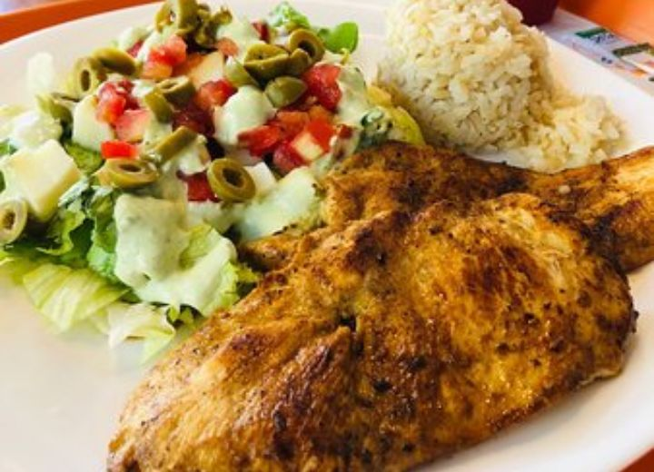
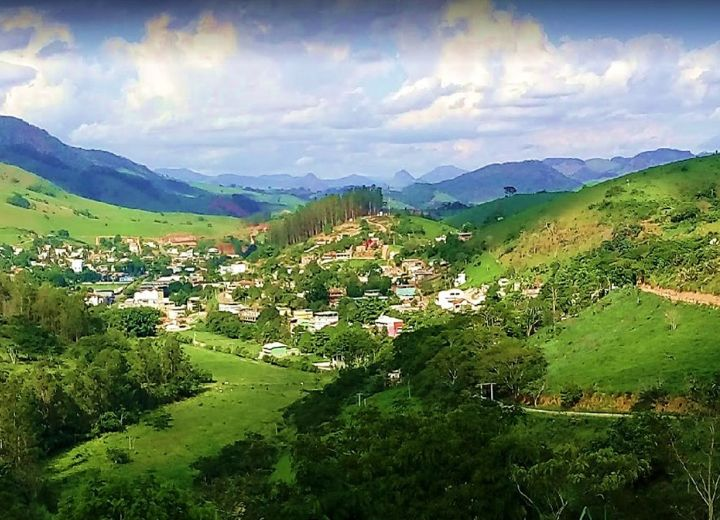
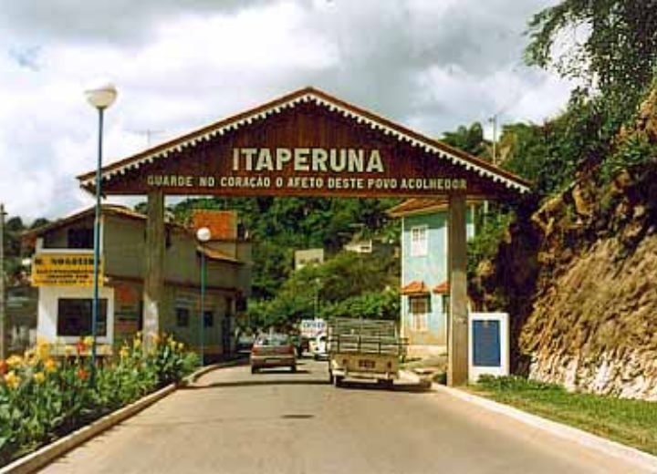

Christ the Redeemer
The second largest Christ the Redeemer monument in Brazil is located in Itaperuna. The monument, which is 20 meters high, was conceived by the late former mayor Cláudio Cerqueira Bastos and designed by the sculptor from Espírito Santo, Antônio Francisco Moreira. It is located at the top of Castelo Hill, from where it is possible to have a wide view of almost the entire urban area of the city. The Christ of Itaperuna is catalogued in the Cultural Map of the State of Rio de Janeiro.
Best Cuisine
The cuisine of Itaperuna is strongly influenced by the state of Minas Gerais, due to its proximity. It has a characteristic and unparalleled flavor, a tasty seasoning, and is especially appreciated by those who seek a more homemade style of food.
Beautiful Views
Beautiful natural landscapes can be appreciated, with verdant hills, rivers, and preserved forests.
São José do Avahy Church
With an eclectic style, the São José do Avahy Matriz Church is located in the center of Itaperuna. Those who pass by Cardoso Moreira Avenue cannot help but notice its two frontal staircases, between which there is a grotto in honor of Our Lady of Lourdes. Quite spacious, the church can be seen from afar due to its two bell towers. Inside, there are several columns, a series of stained glass windows, a baptistery, and a large choir above the main entrance, housing organs that function through a system of flutes.
Welcoming People
Come and visit this wonderful city, with a welcoming and hospitable people. You will never forget the affection you will receive.